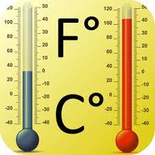

A Simple thermometer converter that works offline
My first paid job was teaching, teaching Physics, Chemistry, Mathematics and Basic Science. I was inspired by most of the great discoveries in science, and when I transitioned into tech I felt the need to maintain that connection because I believe there is alot that tech can do for the science community at large. This app converts temperature values between three thermometer scales, the Celcius scale, Kelvin scale and the Farenheit scale, although work is on progress to include more temperature scales

When I completed the projects for front end development path on freecodecamp.org platform, I continued my learning by picking up the algorithm challenge path. Built a loan claculator as my first project.
It took me quite sometime to complete the loan calculator project, although it was a small project but I was just starting to put my knowledge of algorithm and DOM manipulation into practice. After the loan calculator project, I was motivated to do more algorithm project, then I decided to go back to my science roots to pick up a project, I eventually concluded to do the thermometer converter